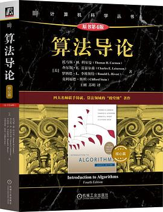

|
 |
算法导论·核心篇（原书第4版）作者：[美]托马斯·H. 科尔曼(Thomas H. Cormen),[美]查尔斯·E. 雷瑟尔森(Charles E. Leiserson),[美]罗纳德·L. 李维斯特(Ronald L. Rivest),[美]克利福德·斯坦(Clifford Stein) 《算法导论（原书第4版）》以高度的严谨性与全面的覆盖性著称，深入阐述计算机算法设计与分析的各个重要领域。从排序和顺序统计量、数据结构、图算法等经典内容，到动态规划、贪心算法、摊还算法等高级设计和分析技术，再到NP完全性理论与近似算法等前沿课题，全书体系完整，条理清晰。各章自成体系，均可作为独立的学习单元；算法以伪代码形式呈现，说明与解释力求深入浅出而不失数学严谨性，具备基础程序设计经验的读者即可理解。本书适合计算机及相关专业本科生、研究生作为教材使用，亦是软件工程师、算法工程师、数据科学家、研究人员，以及所有希望夯实算法基础、提升编程内功的开发人员案头必备的参考书。本书是《算法导论（原书第4版）》的核心篇（第1~25章），涉及算法设计与分析的核心理论及应用。 |